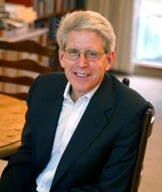

News Archives : 2012 : A Lasker Goes To . . . Tom Maniatis, Former MCB Professor
by Richard Saltus
October 24, 2012

Thomas Maniatis, a long-term colleague and former professor in the Department of Molecular and Cellular Biology (MCB), has won the Lasker Foundation’s Koshland Special Achievement Award in Medical Science, which recognizes exceptional leadership and citizenship in biomedical science. He shares the prize with Donald D. Brown of the Carnegie Institution for Science in Baltimore. The award committee lauds Maniatis and Brown for their numerous fundamental discoveries concerning the nature of genes and their selfless commitment to young scientists, and also for disseminating “revolutionary technologies” to the scientific community. Lasker awards are widely seen as the “American Nobel Prize” – and are often precursors to actual Nobels.
Maniatis was a pioneer of biotechnology and one of the scientists who brought molecular biology to Harvard University. He joined what is now MCB in 1980 and once served as chair of the Department of Biochemistry and Molecular Biology. He retired from Harvard as the Jeremy Knowles Professor of Molecular and Cellular Biology in 2009 when he moved to New York. He is currently the Isidore Edelman Professor of Biochemistry and Molecular Biophysics at the Columbia University College of Physicians and Surgeons in New York, where he studies innate immunity, gene regulation in the brain, and Amyotrophic Lateral Sclerosis (ALS).
"I am deeply grateful for this award, as it not only recognizes my career in science, but also the talent and accomplishments of the outstanding students and postdoctoral fellows who have worked in my lab,” Maniatis told the MCB department. “In over 30 years at Harvard, I benefited enormously from extraordinary students and colleagues who have enriched my scientific and personal life."
Catherine Dulac, the current chair of MCB, said, “I am delighted to learn that Tom Maniatis was awarded the 2012 Lasker award. Tom is a pioneer and iconic figure in molecular biology. He helped create the field with his research, and he also trained cohorts of students and scientists both directly in his classroom, in his lab, and through his publications and famous Molecular Biology textbook. In addition to being an extraordinary scientist, Tom has been a wonderful colleague here at Harvard for many years, and on behalf of the entire MCB department I wish to congratulate Tom for this well deserved award.”
The bulk of Mantiatis’s work commended in the Lasker award was conducted at his Harvard lab. Early in his career, he developed a method for accurately cloning messenger RNAs and constructing cDNA libraries, which expanded the uses of the then new recombinant DNA technology. The Lasker committee wrote, “Maniatis created the quintessential Molecular Cloning manual—based on his own pioneering work—and thus spread revolutionary technologies into a multitude of laboratories across the world.” He also created the first human DNA library, allowing researchers to retrieve any gene they wish. The library included regulatory sequences and other regions of the genome that do not encode proteins. Maniatis used these methods to investigate regulatory mechanisms of human cells, which was previously only possible in bacterial cells. He was the first to identify DNA “point mutations” associated with an inherited human disease, ? thalassemia.
Lasker awards run in Maniatis’s academic family tree. He was a post-doctoral fellow at Harvard with former MCB professor Mark Ptashne, who won a Lasker Award in 1997. Ptashne’s own advisor and mentor, Matthew Meselson, who is the Thomas Dudley Cabot Professor of the Natural Sciences in MCB, received a Lasker Award for Special Achievement in Medical Science in 2004. Maniatis introduced Meselson as his “scientific grandfather” at that award ceremony.
Regarding Maniatis’s own award, Meselson said, “Despite the great disruption of moving from Harvard to Columbia four years ago, Tom's laboratory has remained at the forefront of research in three areas of fundamental biological and medical importance: protocadherin regulation and function, molecular mechanisms in motor neuron disease, and the control of innate immunity.”
Maniatis was born in Denver, Colorado and received an undergraduate degree from the University of Colorado in 1965. He mentored with Dr. Leonard Lerman for his PhD in Molecular Biology from the then new Department of Molecular Biology at Vanderbilt University, where he studied the mechanisms of gene regulation in eukaryotes. He came to Harvard as postdoctoral fellow with Professor Mark Ptashne, and he also conducted postdoctoral work and Dr. Fred Sanger at the Medical Research Council Laboratory of Molecular Biology in Cambridge, England. He was slated to become a faculty member at Harvard in 1976, but he declined the offer when the city of Cambridge, Massachusetts announced a moratorium on recombinant DNA research. He accepted appointments at Cold Springs Harbor and then California Institute of Technology. After the Cambridge moratorium was lifted in 1981, he returned to his former department at Harvard. Together, he and Ptashne founded Genetic Institutes in 1980, which was bought by Wyeth (American Home Products at the time) in the 1990s. Maniatis has also received Honorary PhDs from the University of Athens and the Watson School of Cold Spring Harbor Laboratory.
Ptashne, who is now at Memorial Sloan Kettering Cancer Center in New York City, applauded his former postdoctoral fellow and colleague for the Lasker award. "Tom has for years been a leading figure in the field, and was an invaluable source of strength to our Department at Harvard. I am delighted he has received this award!"
Tom Maniatis’s acceptance speech at the 2012 Lasker Award Ceremony
Tom Maniatis’s Lasker Essay: On The Road From Classical To Modern
Molecular Biology (PDF)
Tom Maniatis’s introduction of Matt Meselson at the 2004 Lasker Award Ceremony
2004 MCB profile of Tom Maniatis: Tom Maniatis: Gene Expression, Cloning And Beyond
The 2012 Lasker Award for Special Achievement in Medical Science